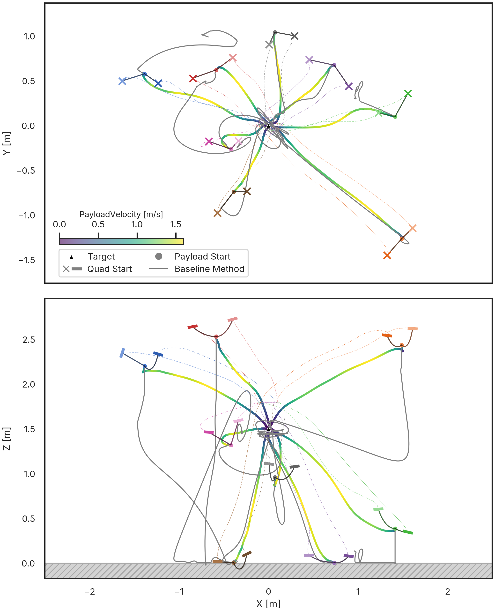
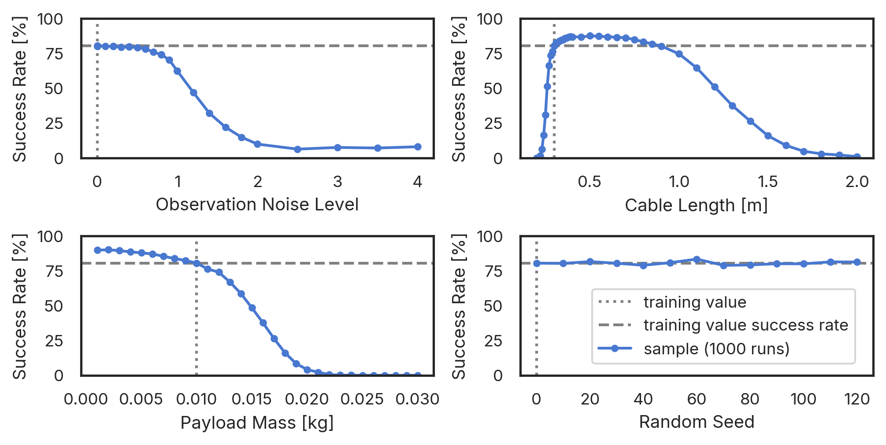
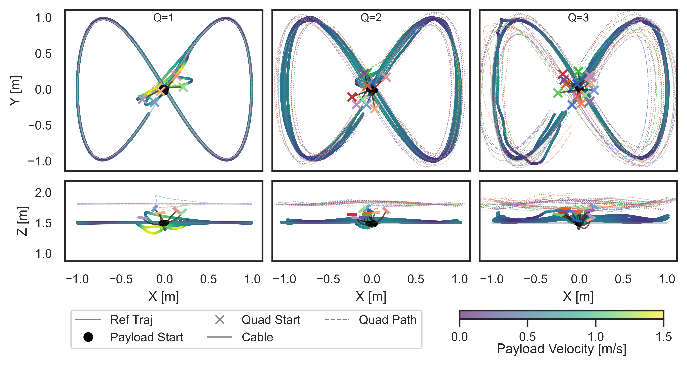
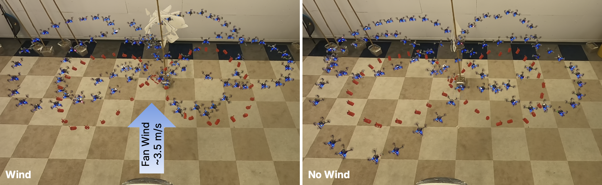
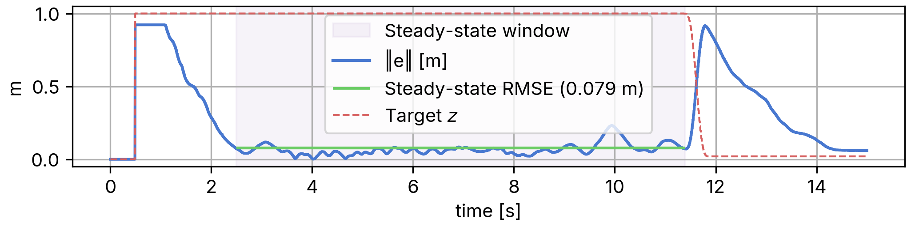

Abstract
Collaborative transportation of cable-suspended payloads by teams of Unmanned Aerial Vehicles (UAVs) has the potential to enhance payload capacity, adapt to different payload shapes, and provide built-in compliance, making it attractive for applications ranging from disaster relief to precision logistics. However, multi-UAV coordination under disturbances, nonlinear payload dynamics, and slack–taut cable modes remains a challenging control problem. To our knowledge, no prior work has addressed these cable mode transitions in the multi-UAV context, instead relying on simplifying rigid-link assumptions. We propose CrazyMARL, a decentralized Reinforcement Learning (RL) framework for multi-UAV cable-suspended payload transport. Simulation results demonstrate that the learned policies can outperform classical decentralized controllers in terms of disturbance rejection and tracking precision, achieving an 80% recovery rate from harsh conditions compared to 44% for the baseline method. We also achieve successful zero-shot sim-to-real transfer and demonstrate that our policies are highly robust under harsh conditions, including wind, random external disturbances, and transitions between slack and taut cable dynamics. This work paves the way for autonomous, resilient UAV teams capable of executing complex payload missions in unstructured environments. Code and videos can be found on the website: https://github.com/IMRCLab/crazyMARL.
Video
Method
RL Formulation
- Algorithm: Independent PPO (IPPO) with shared parameters across agents.
- Observations: Payload position/velocity error, relative poses, teammate positions, previous actions.
- Actions: Normalized values mapped directly to motor PWM at 250 Hz.
- Reward: r = rtrack · rstable + rsafe
- Track: Guides payload position and velocity towards goal.
- Stable: Velocity caps, swing limits, vertical alignment, taut cables.
- Safe: Collision penalties and action smoothness.
Training & Domain Randomization
- Simulator: MuJoCo MJX with accurate slack–taut cable dynamics and end-to-end JAX training.
- Scale: 16,384 parallel environments on GPU for high-throughput rollouts.
- Randomization: Motor parameters, actuation lag, sensor offsets, and payload properties varied each episode.
- Harsh Initializations: Ground and air starts with random velocities, orientations, formations, and slack cables.
Core Contributions
- Decentralized MARL: Independent execution with no inter-robot communication at runtime.
- Direct Motor PWM: No cascaded controllers — policies operate near actuation limits.
- Slack–Taut Cables: First multi-UAV work to handle cable mode transitions without rigid-link assumptions.
- Zero-Shot Sim-to-Real: Policies transfer directly to Crazyflie 2.1 under 3.5 m/s wind.
Simulation Results

- Recovery trajectories: CrazyMARL vs. classical decentralized baseline.
- 79.7% recovery rate vs. 43.5% for the baseline.

- Robust success across varying cable lengths, payload masses, and sensor noise levels.

- Fig-8 tracking with 1, 2, and 3 quadrotors using the same shared policy.
Real-World Results

- Zero-shot sim-to-real fig-eight trajectory tracking.
- Stable under 3.5 m/s wind.

- Agile takeoff: 0 to 1 m in 2.5 s.
- 0.079 m RMSE in wind (vs. 0.064 m without).
BibTeX
@inproceedings{lorentz2026crazymarl,
title={CrazyMARL: Decentralized Direct Motor Control Policies for Cooperative Aerial Transport of Cable-Suspended Payloads},
author={Lorentz, Viktor and Wahba, Khaled and Auddy, Sayantan and Toussaint, Marc and H{\"o}nig, Wolfgang},
booktitle={IEEE International Conference on Robotics and Automation (ICRA)},
year={2026},
url={https://arxiv.org/abs/2509.14126}
}